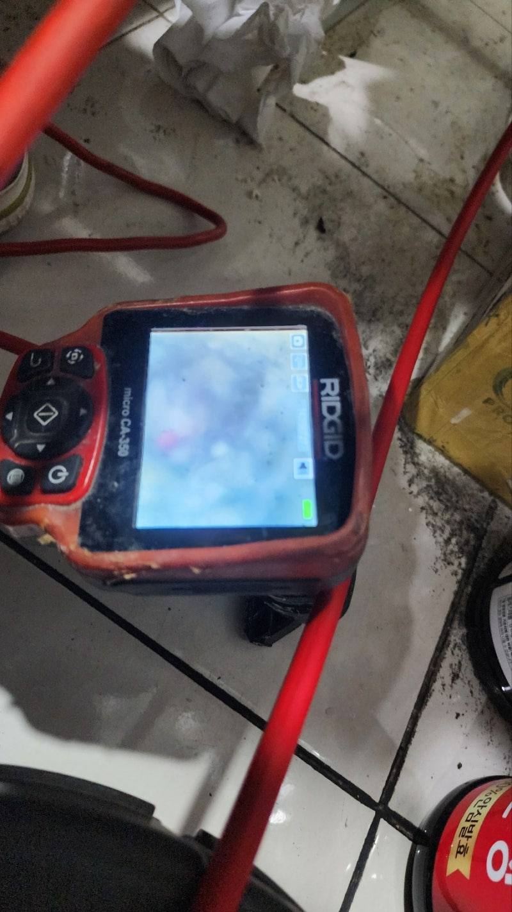
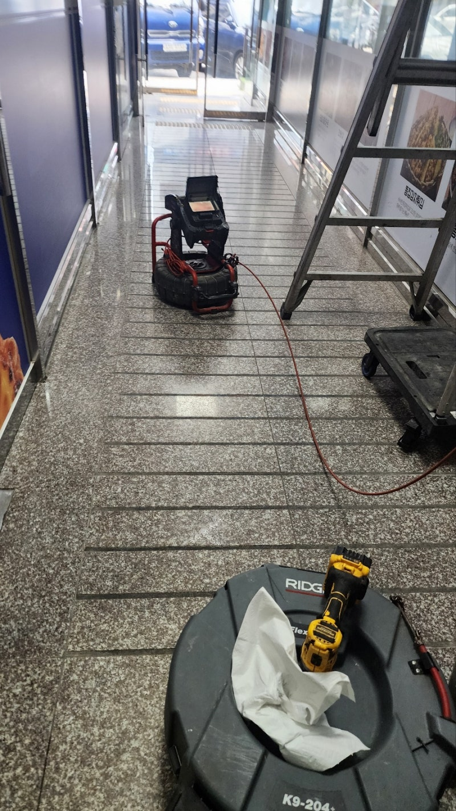
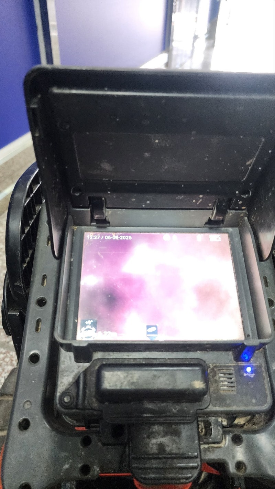
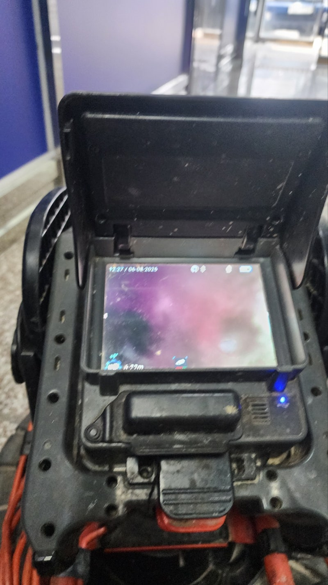
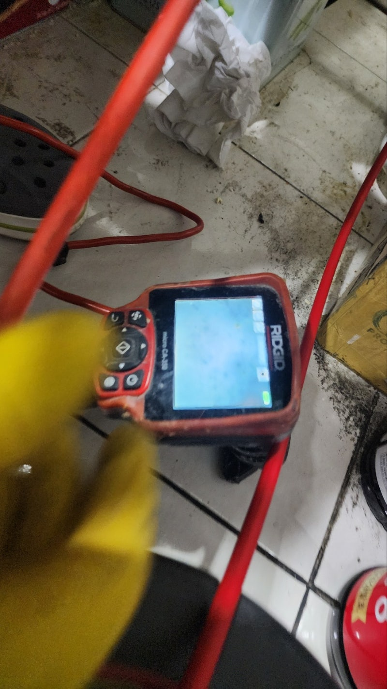

안녕하세요.
설비전문업체 "하수구수사대" 입니다.

화성 송산 싱크대하수구막힘 마도면 배수구역류 뚫는곳 설비업체
물에 완벽히 녹아내리지 않는 고체 형태의 이물질이 들어올 경우 관로 내부는 화장실막힘 베란다막힘 무엇이든 더러운 물질로 가득 막힐 수 있습니다.
게다가 슬러지가 점성으로 뭉쳐지게 되면 훨씬 굳은 덩어리가 됩니다.
최대한 단면이 잘 형성되도록 종종 배관 내부의 오염물 관리를 해주고 배수구 클리너 청소 역시 청결하게 처리를 해주셔야 해요.
이번 장소는 하수구막힘 문제로 인해 다급히 처리를 의뢰해주셨던 곳으로 통상적으로 나타나는 욕실 배수구 막힘 이상이었어요.
이러한 징후가 발생한 부위는 어디냐면 바로 메인 배관이였습니다.
다양한 형태의 불순물이 정체되어 하수가 올바르게 흐르지 않았어요.
우선 일반적으로 화장실은 여러 하수구 구조물이 설치되어 있어서 시설 하나하나 모두 확인해야하는 상황이었어요.


화성 송산 싱크대하수구막힘 마도면 배수구역류 뚫는곳 설비업체
간혹 막힌 위치만 빠르게 정리하고 작업을 끝내는 업체도 있지만 화장실은 원체 하수가 들어오는 영역이 넓고 흘러온 오수의 종류에 따라 각각 관거가 있기 때문에 전체적인 관리하고 구체적인 정비가 필요해요.
내시경 카메라를 이용해 확인해보니 화장실막힘 현상은 머리카락같은 오염물이 발견됐어요.
아무래도 세수대를 이용하면서 들어간 머리카락 등의 여러가지 찌꺼기가 함께 결합되어 해당 문제를 초래하게 된 것으로 보였어요.
욕실에서 활용하는 세정제 안에는 자체 점성이 있어 슬러지가 결합되면 금세 덩어리가 됩니다.
시간이 흐름에 따라 석회질의 물질과 함께 섞이게 되면 굳은 덩어리가 형성될 수 있어요.
위와 같은 찌꺼기의 상태는 배관을 더욱 심하게 가로막아 결국 배관 막힘이 일어날 수밖에 없어요.
고객님께서도 초기에는 배수가 잘 진행되지 않아 불편했지만 심한 문제로 여기지는 않으셨다고하는데요.
그렇지만 슬러지가 지속적으로 쌓이면서 완전히 단면을 가로막아 폐수가 거꾸로 흐르는 일이 나타났다고 해요.
더욱이 악취가 지나치게 발생했다고 말씀하셨는데 배관에 만들어진 이물질이 변질되게 된 것 같아요.


화성 송산 싱크대하수구막힘 마도면 배수구역류 뚫는곳 설비업체
청결 부분에서도 문제지만 식구들의 건강에도 나쁜 영향을 주기 때문에 가급적 관로 관리는 빠르게 해결해야하고 문제가 있다면 기술자에게 부탁하는게 좋습니다.
배관 내부에 형성된 찌꺼기 처리를 위해 먼저 석션기를 사용하여 청소를 했습니다.
단면을 면밀히 들여다보면 오염물이 입구를 가득 뒤덮고 있어 다른 장비가 들어갈 수 있는 자리가 확보되어 있지 않았어요.
석션작업으로 웬만하면 많은 양의 오염물을 빼내고 단면을 마련한 뒤 철저하게 슬러지를 처리해드렸어요.
배관 속에 들어있는 찌꺼기는 그 모양이 상당히 다양하기 때문에 장비 또한 배관 구조에 맞게 사용해야합니다.
스프링 시설 등을 이용하여 파이프의 쌓여 있는 불순물을 점차 청소해 드렸어요.


특히 배수관의 단면이 변형되는 지점에서 이물질 누적 현상이 심각하게 드러나고 있었어요.
여기는 폐수가 나와도 유속이 제대로 형성되지 않는 장소로 끈적끈적한 입자가 차츰차츰 축적될 수 있는 지점이기도 합니다.
첫째로 스프링 기기 등을 사용하여 파이프의 단면을 막는 찌꺼기들을 말끔하게 청소하고 적정한 유속이 만들어질 수 있도록 유지해드렸어요.
예상보다 관리해야 할 영역이 많길래 조금 더 신중하게 정비가 시행되었어요.
끝내는 스케일링 작업중 배수관에 튼튼함을 훼손할 수 있는 염려가 있어 내시경 카메라 기기를 사용하여 공사를 완료해드렸어요.
카메라 장비는 누적된 오염물질의 대부분을 확인가능하기 때문에 매우 간단하게 하수구막힘 관리가 가능합니다.
관로에 대한 안전성은 기술자가 꼭 체크해야하는 부분인 만큼 노하우가 많은 회사가 좀 더 용이하게 작업할 수 있을 거예요.


화성 송산 싱크대하수구막힘 마도면 배수구역류 뚫는곳 설비업체
생각보다 오염물질을 제거하는 단계에서 하수도관 자체가 훼손되는 상황이 꽤 빈번하거든요.
말씀드린 이상은 향후 누수 문제로 이어지고 빠져나온 하수는 인근 토사 및 시설물을 망가뜨리기 때문에 큰 문제로 번질 수 있어요.
저희 업체 같은 경우 공사 중에도 반드시 내시경 장비를 쓰고 있으며 업무가 끝나면 그자리에서 공사 결과를 카메라 장비로 보여드립니다.
이렇게 진행하니 어떤곳보다 이물질 제거에 있어 신뢰도가 높습니다.
하수구막힘에 제거된 불순물만 해도 꽤 많은 분량이 제거가 됐어요.
실제 우리가 활용하는 하수구 구조는 여러가지 종류의 불순물이 흘러들어오는 곳이라고 생각하시면됩니다.
이때 형성된 점도가 같이 응고되면서 배관 막힘을 유발하게됩니다.
고형물은 빠르게 썩기도 하고 가끔은 배관의 약한 위치에 문제를 발생시킬 수 있기 때문에 필히 전문업체에 관리를 받을 수 있게 되도록 사전에 처리해 주세요.


배관속에 쌓인 불순물의 대부분을 제거하여 단면을 깨끗하게 관리하고 알맞은 유속이 형성될 수 있게 상태를 정비해드렸습니다.
생각보다 제거한 오염 물질 자체가 다량이라는 것은 확인 가능합니다.
카메라 장비를 활용하여 내부 상태를 점검해보면 실제로 이용하고 있는 배관의 넓이가 생각보다 작다는 것을 알 수 있어요.
즉 이용자가 제대로 관리를 진행해야만 단면을 지키고 적당한 유속이 형성될 수 있게 하수구를 사용할 수 있어요.
스케일링 과정을 통해 정리된 내부 컨디션은 보는 바와 같이 깨끗하게 작업된 사실을 살펴볼 수 있어요.
단면이 제대로 형성되면서 맨 처음 배관을 계획할 때 구상했던 통수량도 유지 가능합니다.

화성 송산 싱크대하수구막힘 마도면 배수구역류 뚫는곳 설비업체
모든 과정은 작업 진행 전 의뢰인에게 자세히 말씀을 해드리고 수리를 진행 후 결과물에 대해서도 같이 공유하여 이상이 있는 부분을 꼼꼼하게 관리하도록 자세히 설명드렸어요.
사용자 스스로 구조물에 대한 장단점을 제대로 알고 있다면 화장실막힘 베란다막힘 무엇이든 배관의 내구성을 지속하면서 설비의 수명 역시 오랜 세월 사용할 수 있습니다.
하수구수사대 010 2340 2118
#송산하수구막힘 #송산싱크대막힘 #송산싱크대역류 #송산배수관막힘 #송산배관뚫는곳 #송산설비 #송산맨홀막힘 #송산하수구뚫는업체 #송산변기막힘
#마도하수구막힘 #마도싱크대막힘 #마도싱크대역류 #마도하수구역류 #마도화장실막힘 #마도설비 #마도하수구뚫는곳 #마도하수구뚫는업체
#마도변기막힘